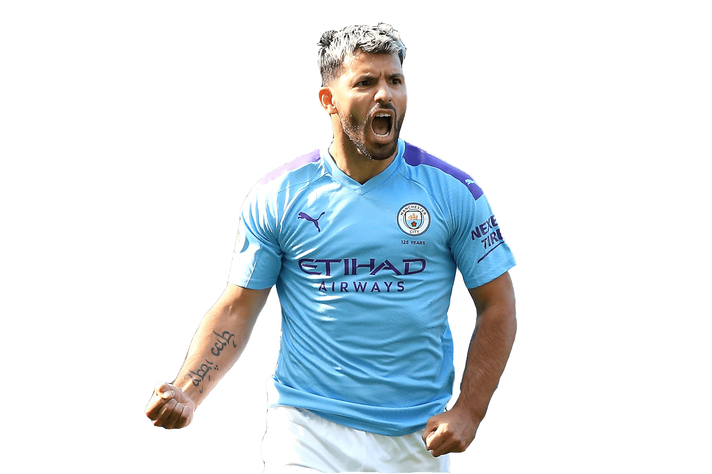

Sergio Agüero

Sergio Leonel Agüero del Castillo, conocido comúnmente como Kun Agüero es un exfutbolista y empresario argentino que jugaba como delantero. Es considerado uno de los mejores delanteros de su generación y uno de los mejores jugadores en la historia de la Premier League inglesa según Daily Mirror, competición que disputó durante una década. Actualmente es streamer y es CEO del equipo de E-Sports KRÜ.